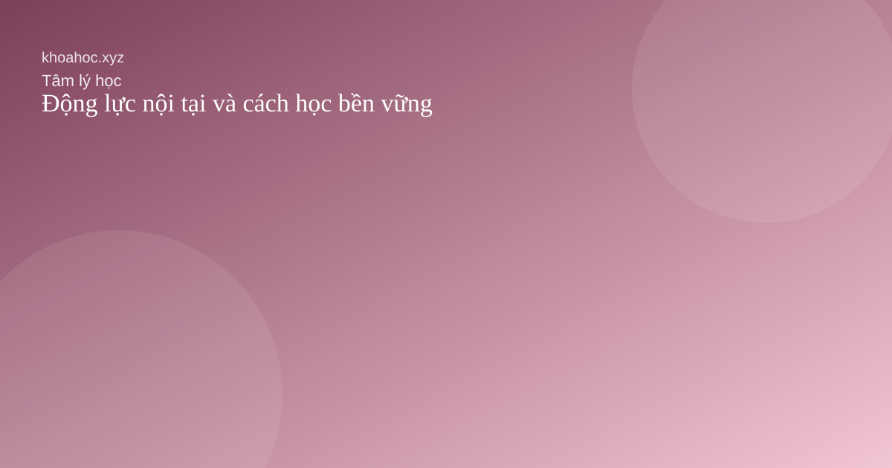
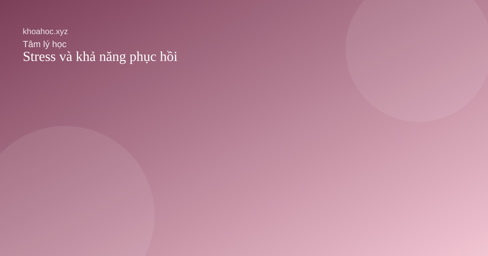
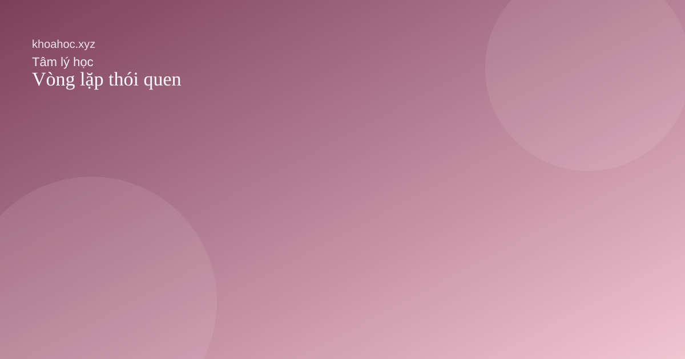

Động lực nội tại và cách học bền vững

Khi việc học gắn với ý nghĩa cá nhân, ta ít phụ thuộc hơn vào cảm hứng nhất thời.

Khi việc học gắn với ý nghĩa cá nhân, ta ít phụ thuộc hơn vào cảm hứng nhất thời.

Một ấn tượng tốt ở một mặt nào đó có thể lan sang mọi đánh giá còn lại.

Vấn đề không phải là không bao giờ stress mà là biết phục hồi sau áp lực.

Vì sao chúng ta thường ưu tiên thông tin củng cố niềm tin có sẵn.

Thói quen bền vững thường được hình thành từ tín hiệu, hành động và phần thưởng.